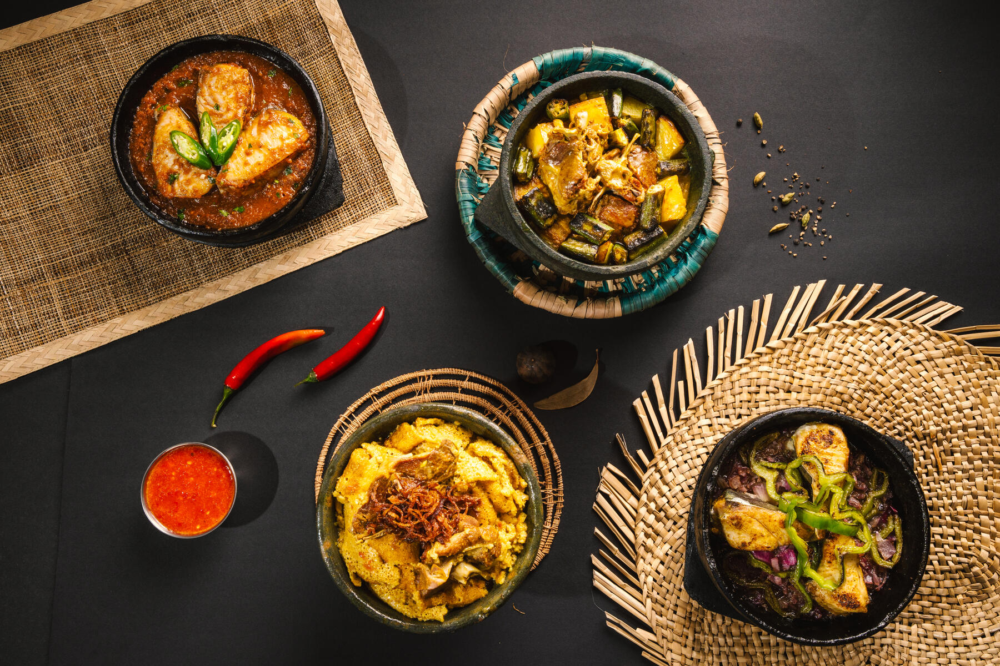
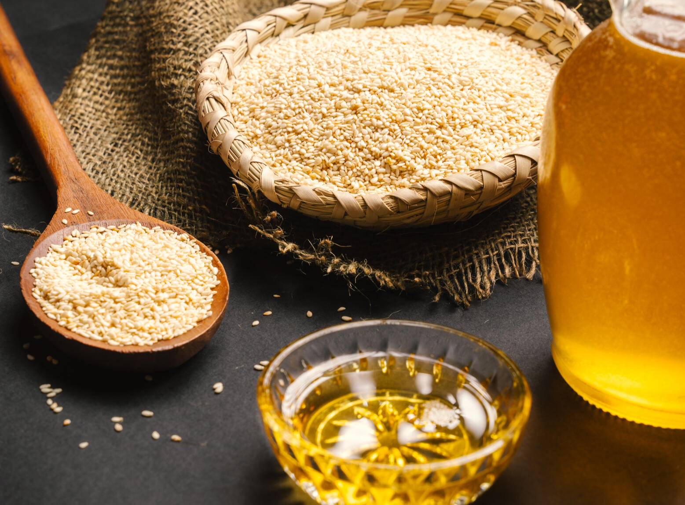
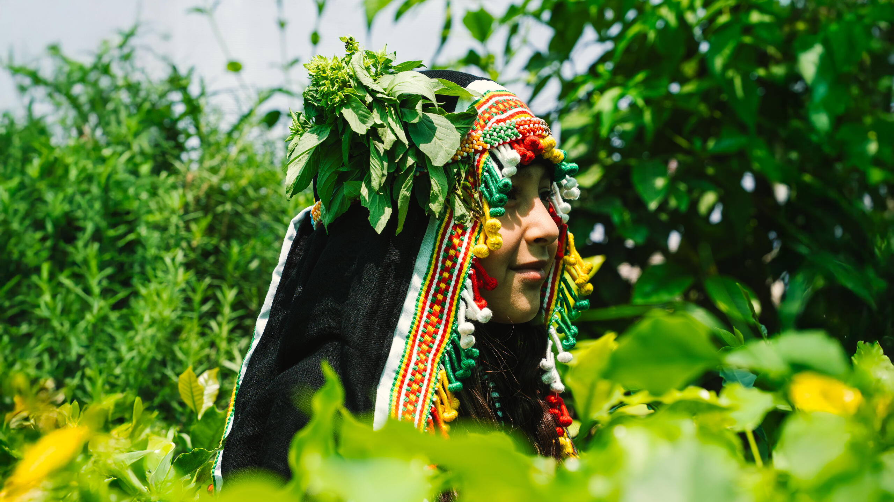

مدونة ردايم
جازان والجازانيين
مدونة جازان والجازانيين، حيث الموروث الثقافي والأدبي والفني.
تصفح المدونةمن مائدة جازان إلى العالم
اكتشف حكايتنا
وُلدت فكرة مصنف عام 2019 من شغفٍ بإحياء المطبخ الجازاني وتقديمه برؤيةٍ معاصرة تصون أصالته وتُبرز جوهره.
رؤيةٌ ترى في المائدة لغةً ثقافية راقية، تمتزج فيها النكهة بالهوية، ويُستحضر فيها دفء الضيافة السعودية في كل تفصيل.
وفي عام 2022، فتح مصنف أبوابه ليقدّم تجربة تتجاوز المذاق إلى الحكاية، تجربة تحتفي بالنكهة والذاكرة والهوية معًا.
منذ انطلاقه، رسّخ مصنف حضوره كرمزٍ للمطبخ الجازاني المعاصر، يجمع بين روح التراث السعودي وأناقة التجربة العالمية.
واليوم، يواصل مصنف رحلته من جازان إلى العالم، حاملًا قصة مائدةٍ تعبق بالأصالة، وتُقدَّم بذوقٍ رفيع يليق بجمال جازان وعمقها.

في جازان، المائدة مرآةٌ للأرض، وصورةٌ للحياة كما تُعاش بكل تفاصيلها. عامرةٌ بالخير، تنبت من أرضٍ غنيةٍ، فيها من كل بيئةٍ بصمةٌ، ومن كل أرضٍ نكهةٌ.
هذه السفرة وُلدت من أرضٍ خُصِّبت بالخيرات حتى سُمّيت سلة غذاء المملكة. أطباقُها تُغنيها خيراتٌ عُرفت بها جازان عبر مواسمها؛ السمسم، والمانجو، والموز، والقوار، والدبّة وغيرها، وتنكَّهت بزيت السمسم الذي صار توقيعًا في مطبخ المنطقة.
تجمع ثراء البحر وكرم الأرض، وتكتمل بأصالة السمن وصفاء العسل. هذه السفرة مشهدٌ من هوية جازان، تُقدَّم بكرمٍ وذوقٍ يعبِّران عن أهلها.
من خيرات مزارع جازان وجبالها؛ مزيج فريد وفاخر من البرّ أو الدخن المحلي المخبوز والمفتوت مع الموز البلدي، يغطيه عسل السُمر الأسود الأصلي مع السمن البلدي، تجربة جازانية أصيلة وطعم لا يُنسى.
سيد السفرة الجازانية وأشهر أيقوناتها؛ يتكون من قطع اللحم البلدي الطازج المطبوخة ببطء مع الخضار من البامية والبطاطس والطماطم، يغمرها مرق اللحم الغني بالنكهة والتوابل الجازانية، تُطهى في إناء حجري في الميفا لأكثر من أربع ساعات.
لذّة الضيراك مع نكهة السليط، تناغم عظيم للنكهات. قطع من سمك الكنعد الطازج المطهو في الإناء الحجري بزيت السمسم الغني مع الفلفل الرومي والبصل، يُتبل ببهارات السمك الجازانية. تجربة استثنائية ومختلفة لعشّاق السمك.
إناء فخاري شكّل جزءًا أصيلًا من تراث المائدة الجازانية، يحتفظ بنكهة ما يحتويه وحرارته. تُميّز كل حيسية بما يُقدَّم فيها؛ كحيسية الخمير باللحم، وحيسية اللحوح، المخموعة، الزومة، المفالت، والعزبة وغيرها.
تراثنا وطريقتنا للتعبير عن قوة النكهة؛ حبات الفلفل الأحمر الطازج المطحون مع الثوم والليمون، والمعدّ بالطريقة الجازانية الأصيلة.
مفالت دخن — طبق مكوّن من أحد أفخر المحاصيل التي تمتاز جازان بزراعتها، فتات أقراص الدخن الممزوجة بالحليب الساخن مع رشة من السمن البلدي وتُحلّى بالعسل أو السكر.
مفالت الخضير — من ألذ وأشهر الأطباق الموسمية، حصاد محصول الذرة الرفيعة في أولى مراحل نضجها، تُخبز وتُطهى مع الحليب الساخن وتُحلّى بالعسل أو السكر.
ركيزة المناسبات والعلامة البارزة للكرم في الولائم، طبق فاخر من اللحم المطهو بالطريقة التقليدية ببطء في التنور حتى يصبح ذائباً، يقدم مع أرز البشاور النثري ويزيّن بالبصل المكرمل.
طريقتنا للزبادي في جازان، خلطة الزبادي مع الثوم والليمون والبهارات، حاضرة على موائدنا لتُضفي على معظم أطباقنا نكهة لا تُقاوم.
دكان مصنف هو مساحة تُكمل تجربة مصنف خارج الطاولة. متجر يقّدم منتجات فاخرة مستوحاة من الهوية الجازانية، من موروثها، وعاداتها، وتفاصيل الحياة اليومية فيها.
يضّم الدكان خطوط متنوعة من التذكارات، المشغولات، والعطور، أصناف غذائية من محاصيل المنطقة، وغيرها. تتوفر المنتجات قريباً عبر ركن خاص في المطعم، المتجر الإلكتروني، ونقاط بيع مختارة.
قريباً

مدونة جازان والجازانيين، حيث الموروث الثقافي والأدبي والفني.
تصفح المدونةطريق الكورنيش، مقابل الدانوب، جازان 82725
طريق أنس بن مالك تقاطع طريق أبو بكر الصديق، حي الياسمين، الرياض 13322